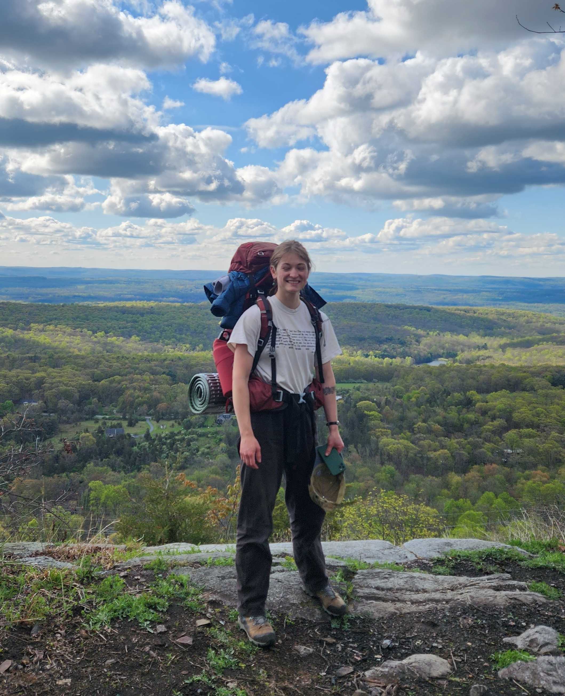
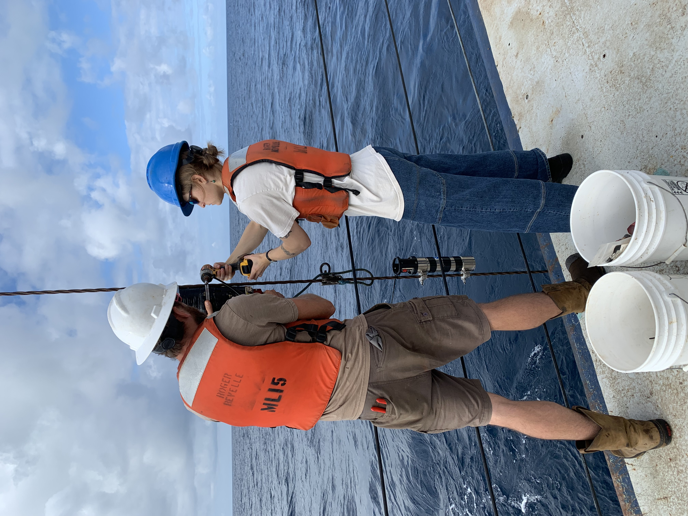
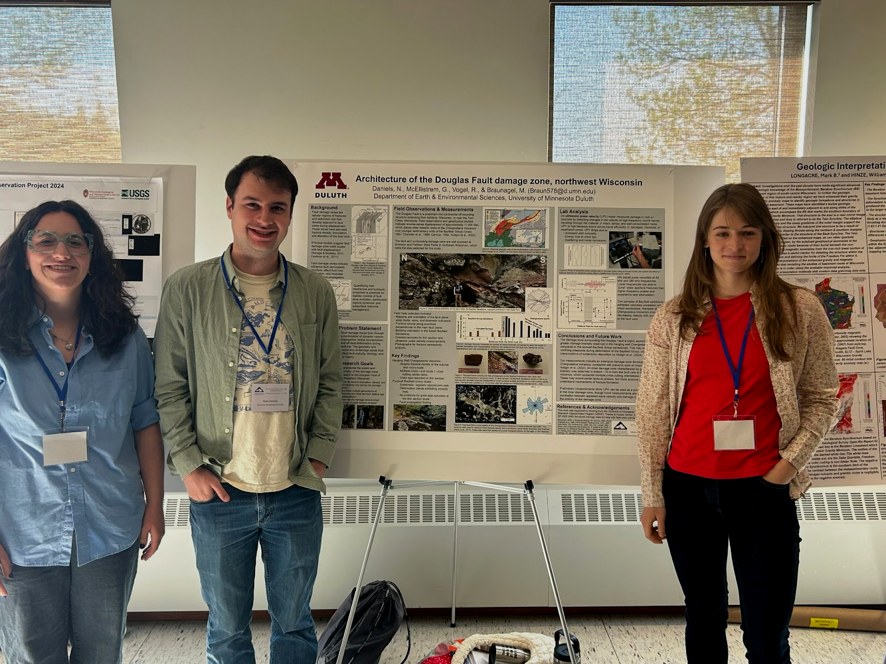
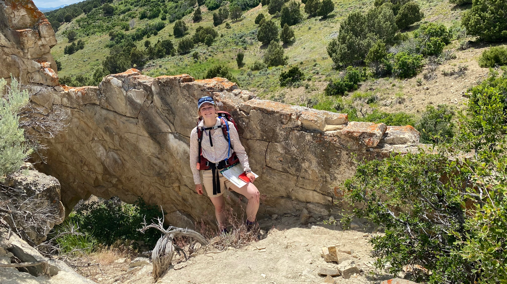
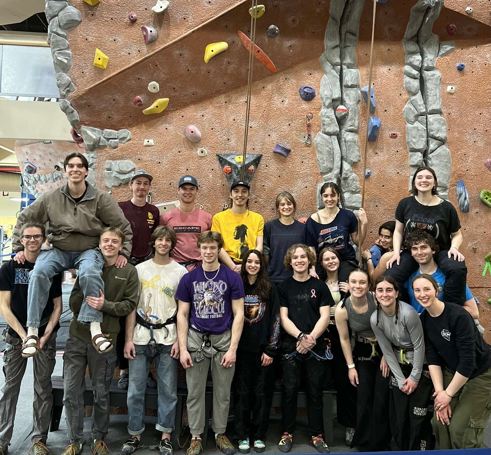

About
I am a second year Masters student at the University of Delaware. I got my Bachelor's degree at the University of Minnesota Duluth and grew up in Eau Claire, WI. My research project focuses on breccias formed at the Chain transform fault. I am interested in what the chemical composition of the matrix can tell us about fluid-rock interactions as well as what the microstructures tell us about the conditions of deformation. In my free time, I like to climb, run and play my bass guitar.
I am a second year Masters student at the University of Delaware. I got my Bachelor's degree at the University of Minnesota Duluth and grew up in Eau Claire, WI. My research project focuses on breccias formed at the Chain transform fault. I am interested in what the chemical composition of the matrix can tell us about fluid-rock interactions as well as what the microstructures tell us about the conditions of deformation. In my free time, I like to climb, run and play my bass guitar.
Current Projects
My Masters research project is based on samples collected on a cruise I went on in 2025, accompanied by my advisor, Dr. Jessica Warren. The research expidition launched out of Mindelo, Cape Verde and took our crew 5 days transit south to the Chain Transform Fault, located on the Mid Atlantic Ridge, right below the equator. While there, we dredged up rocks from the transform and collected bathymetry data of the ocean floor. If you're interested in learning more, I made a short form documentary titled, The Chain Transform Fault Research Cruise | Roger Revelle 2025, please give it a watch!
Following the same flow as the video mentioned above, I also lead six Ship to Shore live outreach sessions with K-12 schools. These sessions allowed us to answer any questions the students had about life at sea and they got to meet and talk with our captain. Karen B. Roberts, a writer with the UDaily, detailed an article about the sessions.
My Masters research project is based on samples collected on a cruise I went on in 2025, accompanied by my advisor, Dr. Jessica Warren. The research expidition launched out of Mindelo, Cape Verde and took our crew 5 days transit south to the Chain Transform Fault, located on the Mid Atlantic Ridge, right below the equator. While there, we dredged up rocks from the transform and collected bathymetry data of the ocean floor. If you're interested in learning more, I made a short form documentary titled, The Chain Transform Fault Research Cruise | Roger Revelle 2025, please give it a watch!
Following the same flow as the video mentioned above, I also lead six Ship to Shore live outreach sessions with K-12 schools. These sessions allowed us to answer any questions the students had about life at sea and they got to meet and talk with our captain. Karen B. Roberts, a writer with the UDaily, detailed an article about the sessions.

Past Work
Research
In the spring of 2026, I participated in the Microtectonics Masterclass hosted by the Johannes Gutenberg Universitat Mainz. The course was taught by Dr. Friedrich Hawemann, Dr. Virginia Toy and Dr. Passchier.

In my final year of my bachelor’s degree (2025) at the University of Minnesota Duluth, I completed a one-year research project, funded through UMD’s Undergraduate Research Opportunities Program (UROP). Dr. Michael Braunagel served as my research advisor at this time, providing much-needed guidance as this was my first time creating a research project. My study focused on the deformation surrounding the Douglas Fault, located in northern Wisconsin and central Minnesota. This deformation was accommodated differently by the two main rock units along the fault, the Chengwatana Volcanics and the overlying Bayfield Group Sandstones. Results of the study are outlined below in the poster I presented at UMD’s research symposium.
Research
In the spring of 2026, I participated in the Microtectonics Masterclass hosted by the Johannes Gutenberg Universitat Mainz. The course was taught by Dr. Friedrich Hawemann, Dr. Virginia Toy and Dr. Passchier.
In my final year of my bachelor’s degree (2025) at the University of Minnesota Duluth, I completed a one-year research project, funded through UMD’s Undergraduate Research Opportunities Program (UROP). Dr. Michael Braunagel served as my research advisor at this time, providing much-needed guidance as this was my first time creating a research project. My study focused on the deformation surrounding the Douglas Fault, located in northern Wisconsin and central Minnesota. This deformation was accommodated differently by the two main rock units along the fault, the Chengwatana Volcanics and the overlying Bayfield Group Sandstones. Results of the study are outlined below in the poster I presented at UMD’s research symposium.

Following shortly after this conference, I also presented my research at the Institute of Lake Superior Geology (ILSG) Conference in 2025, combining my research with two of my classmates, Raeann Vogel and Nate Daniels, who also worked under the guidance of Dr. Braunagel. This poster provided a bigger-picture interpretation of the deformation mechanisms as well as timing of faulting and deformation.
UROP poster
ILSG Poster
Environmental Assessment Internship
For over a year during my undergrad, I worked as an intern with MSA Professional Services Inc., based out of Duluth, Minnesota. My main project that I was hired on for was working with Trout Unlimited to quality check road-stream crossings in the Chequamegon-Nicolet National Forest, located in northern Wisconsin. This was a sweaty few months of collecting data about culverts and bridges. Besides this project, I assisted on many others, visiting contaminated sites that needed to have their underground storage tanks (USTs) removed, their contaminated soil excavated, soil and water tested, and wetland reports made.
Undergraduate Field Camp
I participated in the Wasatch-Uinta field camp in the summer of 2024, studying the structures formed in the Laramide Orogeny surrounding Salt Lake City, Utah. During those six weeks, I took a lot of strikes and dips, made interpretive geologic maps and cross sections.

UMD’s North Shore Climbers
